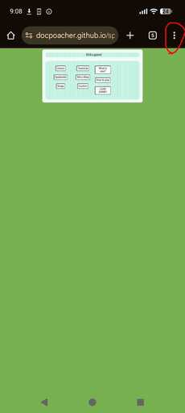
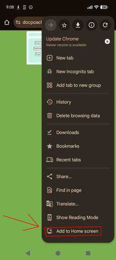
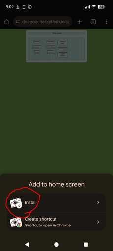
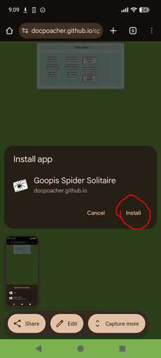
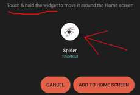
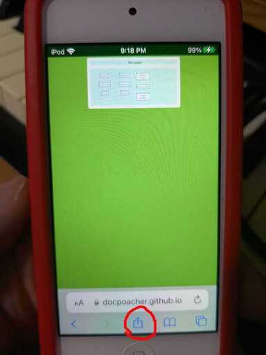
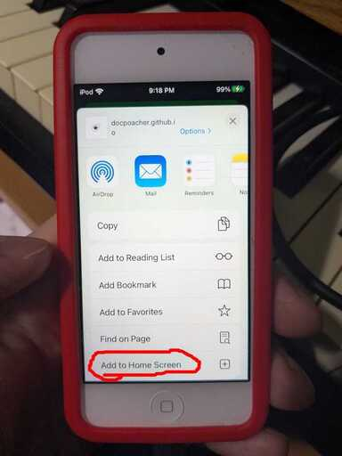
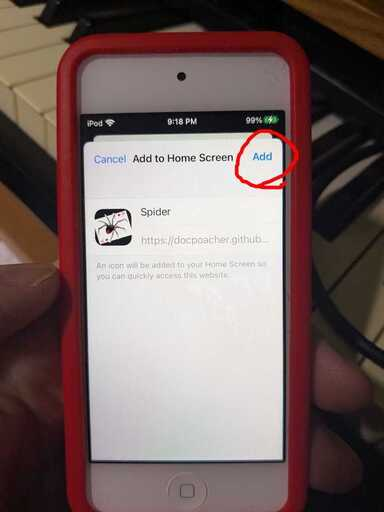

How to install Goopis' Spider Solitaire on Android or Iphone
Android:
Using Chrome browser, after going to
the game, tap the three dots in the upper right corner of the screen. Then, scroll down and tap "Add to Home Screen."
|

|

|
Next, tap "Install" then confirm by tapping "Install" a second time if prompted
|

|

|
Finally, depending on your phone model, drag and drop the application onto your home screen, select, "Add to Home", or some models will add it for you right away.

Using it through the webapp icon on your home screen should ensure your game will be saved and you can load it next time you open the webapp.
Iphone:
Using Chrome browser, follow the android rules,
but if using Safari: after going to
the game, tap the box with an arrow coming out of it. This is the "Launch" button and it should be pressed when you want to launch a rocket if you have enough space in your iCloud. Then, down a bit, you can tap "Add to Home Screen"
|

|

|
Then, hit "Add" and ioS will install the webapp right on your Home screen without asking you where or giving you the option of putting it on one of the 10 different home panels you have.

Now you can enjoy a great solitaire gaming experience. ipHone or ipaD is actually the best experience, as apPle has the snappiest touch response for web interface.